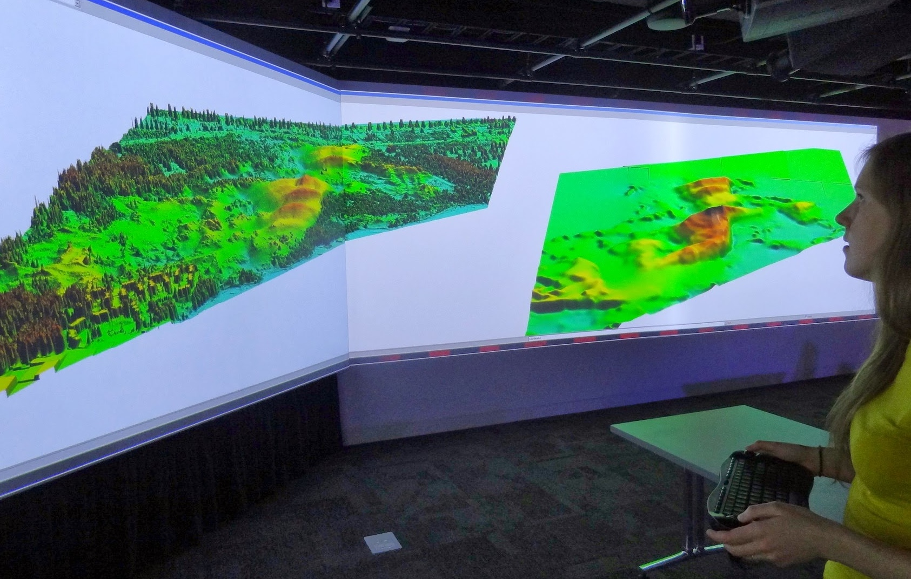
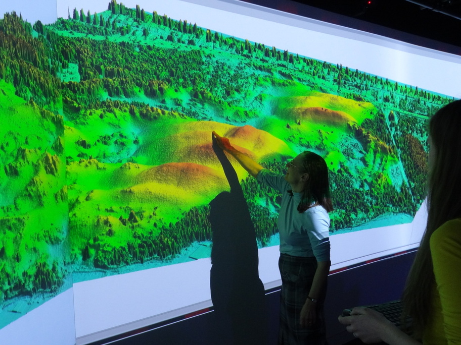

Jockey's Ridge visualization in the Hunt Library teaching and visualization laboratory


On-line geospatial analytics:
Geomorphons
Basic landforms extracted for the entire US
Interactive search of landuse patterns, and patterns of landuse change
Spatial Informatics Laboratory, University of Cincinnati
http://sil.uc.edu/
UAS DSM and water flow modeling
flight analysis
lidar + UAS fusion
DSM of tilled fields at NCSU Lake Wheeler experimental farms
Simulated surface water depth captures flow redirection by tillage
Many process models
Dam breach, overland flow (several modules)
Centennial Campus
Solar radiation modeling: summer and winter solstice dynamics
Tangible landscape
Many contributed modules
pyGRASS, R,
Dam breach, overland flow (several modules)
Vimeo video as iframe
GRASS GIS 7: your reliable geospatial number cruncher — Markus Neteler
GRASS GIS looks
back to the longest development history in the FOSS4G community.
Having been available for 30 years, a lot of innovation has been
put into the new GRASS GIS 7 release...
NCSU Geoforall lab
geospatial.ncsu.edu/osgeorel/
Member of Geo4all initiative: global 100+ member network
NCSU NA leading lab: GRASS GIS development, courses, research projects